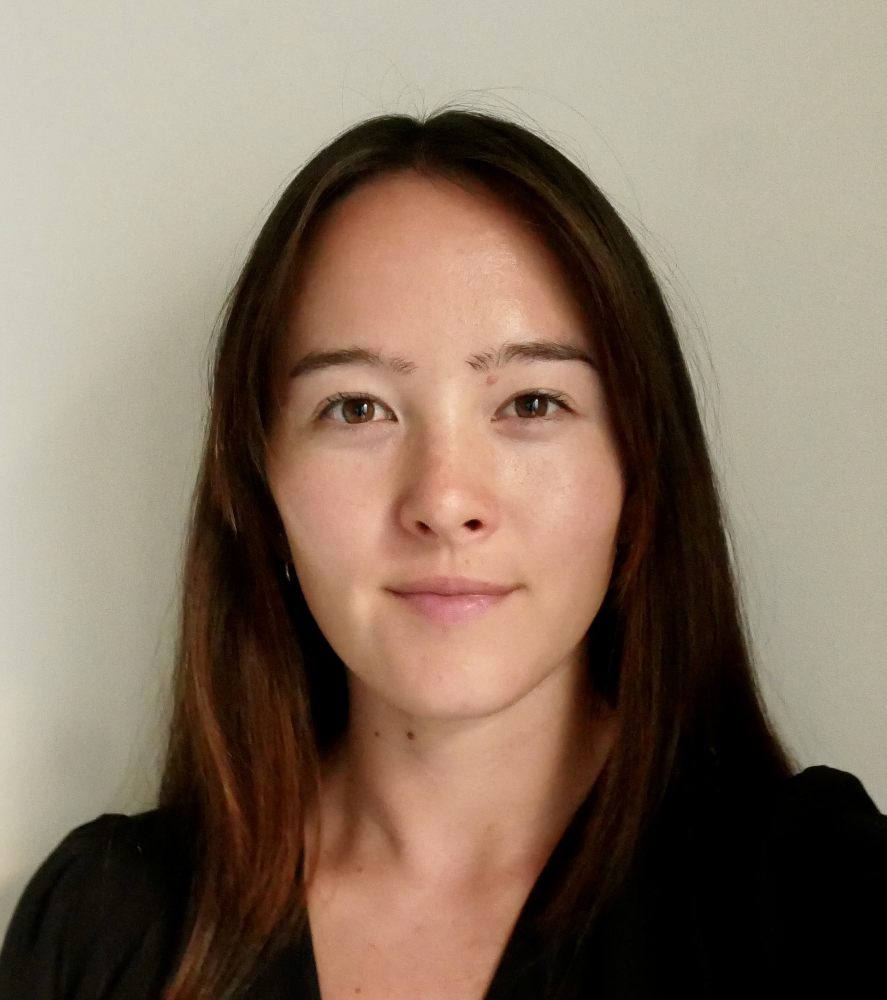

Ciara Dorsay
About me
Welcome to my website. I'm from Sarasota, Florida originally, I but moved to the San Francisco Bay area in 2017 and have stuck around ever since. I'm currently working at a maritime technology start-up as a weather data analyst, and have begun dabbling as an illustrator. I spend a lot of time on the water and in the mountains sailing, spearfishing, backpacking, skiing, and foraging. When I'm not outside, you can find me shooting film, editing videos, and planning my next international adventure. Navigate through the tabs to learn more about me and see what I've been working on.
Contact
email: ciaradorsay@gmail.com